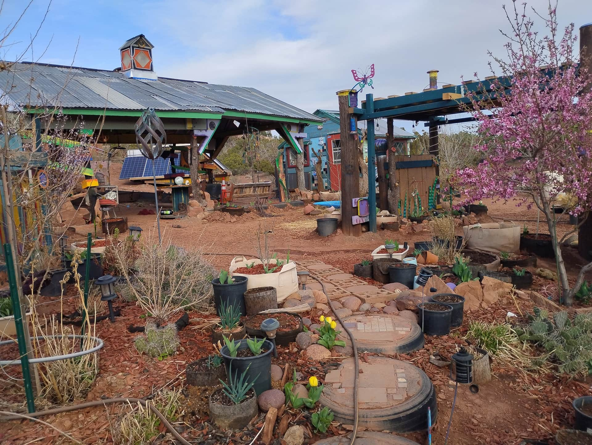
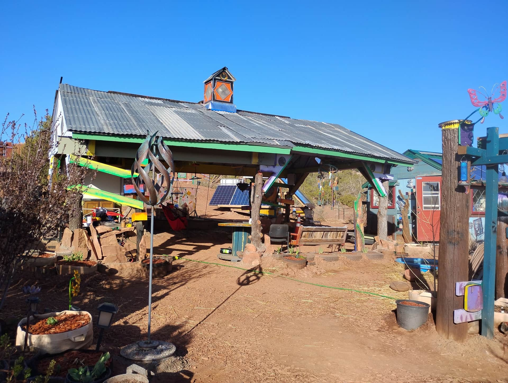
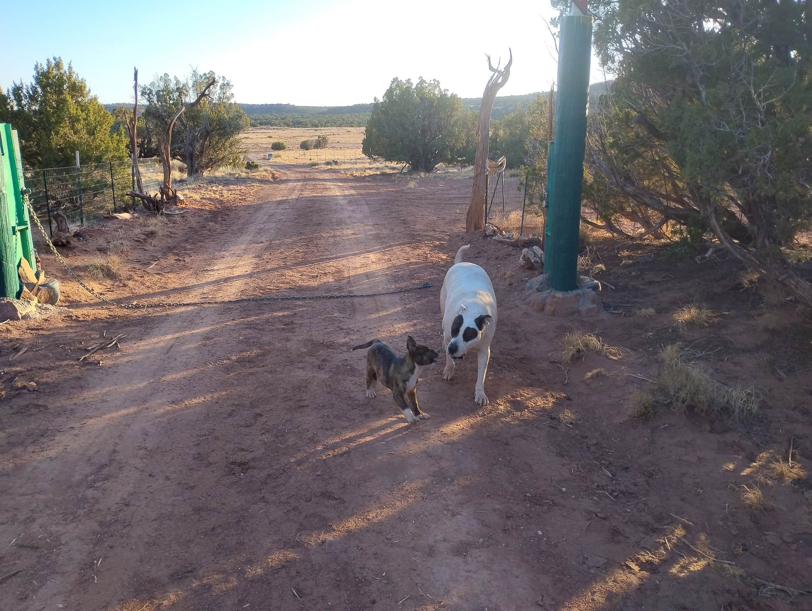

01
Grow
Community garden beds and a green house full of vegetables, herbs and starts. Learn to grow your own food, take home starts for your garden, or lend a hand where it's needed.
“At Hope Grows, we believe that wellness is achieved by growing plants and making art.”

Hope Grows is a nonprofit organization in Snowflake, Arizona, where people come to grow plants, make art, and take a breath. What started as a garden and a green house on forty acres of off-grid land has grown into a place for the whole community.
Whether you have muddy hands from the garden beds or you're just looking for a peaceful night under Arizona's biggest skies, you're welcome here. Our programs are built on a simple idea: growing things grows people.
Hope Grows is a registered 501(c)(3) organization (recognized since 2023), so your gifts are tax-deductible.

Three simple things, done with care.
Community garden beds and a green house full of vegetables, herbs and starts. Learn to grow your own food, take home starts for your garden, or lend a hand where it's needed.
Art days in the garden: painting, potting, and seasonal work with Robert. No experience needed, just a willingness to get your hands a little dirty.
A quiet campsite for tents and small campers, with a fire pit and star-filled nights. Sometimes the most hopeful thing you can do is simply stop and breathe.
Artists and writers spend one to two weeks off-grid at Hope Grows to start or finish a project. The studio comes with an etching press, hand and power tools, and a covered pavilion next door, plus a small cabin, solar power, and Starlink.
Apply with a short proposal and up to ten examples of your work. Residency fees are waived for our first season.
Apply for a residency
About 12 miles from Snowflake, Arizona, tucked off Highway 260 in the White Mountains.

Camping by reservation. Email us to check dates.
“Great spot! Wonderful and friendly hosts! I enjoyed my peaceful night in this beautiful area and the tour of the land. I can't wait to see what Hope Grows grows into on my next visit.”Charissa L. · Camper · June 2025
Every dollar, seedling and pair of helping hands goes right back into the garden.
Ways to give: Venmo @hopegrowsaz · Zelle & PayPal hopegrowsaz@gmail.com · Checks to Hope Grows AZ, 8750 E. Concho Highway, PMB 313, Snowflake, AZ 85937
501(c)(3) nonprofit · EIN 92-3065775 · Tax receipts on request
Questions about the garden, camping, or programs? We'd love to hear from you.